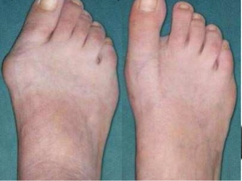

Questão 1 · Lesão do ligamento cruzado anterior · Semiologia do joelho · 4000048823No joelho, o teste de Lachman positivo é patognomônico de lesão de
A ligamento cruzado posterior.
B ligamento cruzado anterior.
C menisco medial.
D menisco lateral.
E ligamento colateral medial.
Questão 2 · Síndrome Compartimental Aguda · Anatomia e Compartimentos da perna · 4000062596Paciente masculino de 40 anos vítima de trauma direto em perna direita sem evidências de fratura, evoluindo com síndrome compartimental na região. Quantos e quais são os compartimentos da perna?
A Quatro compartimentos (ântero-lateral, lateral, posterior profundo e posterior superficial).
B Quatro compartimentos (ântero-medial, lateral, posterior profundo e posterior-medial).
C Três compartimentos (anterior, lateral e posterior).
D Três compartimentos (medial, lateral e posterior).
E Quatro compartimentos (anterior, medial, posterior profundo e posterior superficial).
Questão 3 · Semiologia do Quadril · 4000025042Ao exame físico do aparelho osteoarticular compõe-se da realização de vários testes e manobras especí cas, com o objetivo de auxiliar o diagnóstico clínico. Nesse contexto, o teste de Patrick-Fabere é utilizado para a avaliação de:
A doença da sacroilíaca contralateral.
B contratura do músculo reto femoral.
C deformidade em flexão do quadril.
D fraqueza do músculo glúteo médio.
Revisar: possível letra faltando em enunciado
Questão 4 · Semiologia da Perna Tornozelo e Pé · 4000110344A integridade da unidade ligamentar tibio-fibular distal pode ser diagnosticada através de:
A Manobra da gaveta posterior da fíbula e pela radiografia em perfil do tornozelo.
B Manobra de stress em varo do tornozelo e pela radiografia em oblíqua do tornozelo.
C Manobra da gaveta anterior do tornozelo e radiografia de frente do tornozelo.
D Manobra da gaveta posterior da fíbula, rotação do talo e radiografia em perfil do tornozelo.
Questão 5 · Semiologia da Perna Tornozelo e Pé · 4000041627Um paciente vítima de trauma fechado na perna esquerda, ao saltar sentiu dor aguda. Na investigação clínica o médico observou o teste de Thompsom positivo. Essa positividade indica:
A fratura de maléolo de tornozelo
B fratura diafisária de fíbula
C lesão do músculo tibial anterior
D lesão do nervo fíbula
E lesão do tendão calcâneo
Questão 6 · Semiologia do Quadril · 4000127958A manobra de Patrick-Faber, que consiste na exão, seguida de abdução e rotação externa forçada da coxa, é utilizada na avaliação
A da compressão do ciático homolateral.
B das raízes lombares contralaterais.
C da coxofemoral homolateral.
D da sínfise púbica.
Questão 7 · Anatomia e Semiologia dos Membros Inf eriores · 4000119344Assinale a alternativa INCORRETA em relação aos planos anatômicos do corpo humano:
A Os planos frontais também são chamados de coronais e atravessam o corpo, formando ângulos retos com o plano mediano, dividindo o corpo em partes anterior e posterior.
B Os planos transversos atravessam o corpo, formando ângulos retos com os planos mediano e frontal.
C Os planos sagitais são planos horizontais que atravessam o corpo, dividindo-o em partes superior e inferior, também chamados de planos axiais.
D O plano mediano é o plano vertical que corta o corpo longitudinalmente, divide o corpo nas metades direita e esquerda.
Questão 8 · Semiologia do joelho · 4000058056No teste semiológico do joelho, a manobra de McMurrey é executada com o paciente em decúbito ventral, quadril etido a 40 graus e joelho exionado. O examinador coloca uma das mãos sobre a linha articular do joelho e, ao mesmo tempo, segura o pé com a outra mão. Quando o pé e a tíbia são rodados externamente (lateralmente), a estrutura que está sendo testada é o:
A Ligamento cruzado anterior.
B Ligamento colateral medial.
C Ligamento colateral lateral.
D Menisco lateral.
E Menisco medial.
Questão 9 · Anatomia do Tornozelo e Pé · 4000048240O ligamento talofibular anterior localiza-se na região:
A Lateral do tornozelo.
B Medial do pé.
C Dorso-medial do pé.
D Posterior do tornozelo.
E Entre a tíbia e a fíbula, na região anterior.
Questão 10 · Semiologia do joelho · 4000054926O ligamento cruzado anterior é uma lesão traumática comum do joelho. O teste semiológico de Lachman é uma das opções para o seu diagnóstico. Ele deve ser realizado com o paciente:
A em pé, com o joelho em rotação externa.
B em decúbito dorsal, com o joelho em 30 graus de flexão.
C em decúbito lateral, com o joelho em extensão.
D em decúbito ventral, com o joelho há 90 graus de flexão.
E em posição pudica, com o joelho na posição de conforto para o paciente.
Questão 11 · Anatomia óssea e ligamentar do joelho · 4000054896Das estruturas da região medial do joelho, o ligamento colateral medial, também chamado de colateral tibial, é a estrutura ligamentar dominante. Sua origem é:
A No tubérculo dos adutores.
B No polo inferior da patela.
C No sulco do poplíteo.
D No epicôndilo medial.
E Na fóvea interóssea.
Questão 12 · Anatomia óssea e ligamentar do joelho · 4000020991O ligamento cruzado anterior é irrigado, pricipalmente, pela artéria:
A genicular média.
B genicular lateral.
C genicular inferior.
D genicular superior.
Questão 13 · Semiologia do Quadril · 4000012538No exame físico ortopédico, o teste de Trendelemburg avalia qual das condições clínicas:
A Insuficiência do músculo glúteo médio.
B Insuficiência do músculo glúteo máximo.
C Contratura da musculatura abdutora do quadril.
D Doença da articulação sacroilíaca.
E Contratura em flexão do quadril.
Questão 14 · Anatomia do Tornozelo e Pé · 4000066533Sobre a anatomia do pé, assinale a alternativa CORRETA. (VER IMAGEM)

A O pé egípcio é o considerado ideal.
B O ângulo de valgismo interfalângico normal é de 11º.
C O ângulo intermetatarsal é normal quando inferior a 15º.
D O ângulo de valgismo do hálux normal é inferior a 9º.
E Index plus é quando o primeiro metatarso é maior do que o segundo.
Questão 15 · Joelho · 4000022336Quais estruturas anatômicas constituem a “pata de ganso” no joelho:
A Semitendíneo, semimenbranáceo e grácil.
B Semitendíneo, grácil e sartório.
C Grácil, Semimebranáceo e sartório.
D Quadríceps, sartório e grácil.
E Quadríceps, semitendíneo e semimenbranáceo.
Questão 16 · Anatomia e Compartimentos da perna · Avaliação clínica · 4000013590Uma criança, após queda no parquinho do clube, fraturou o colo da fíbula, qual dos nervos, dentre as opções abaixo, corre o risco de ser cortado?
A Nervo safeno
B Nervo lateral da sura
C Nervo fibular comum
D Nervo tibial
E Nervo isquiático
Questão 17 · Anatomia óssea e ligamentar do joelho · 4000013574Para destravar o joelho que se encontra em completa extensão a m de se preparar o movimento de exão qual/quais músculo (s) é/são requeridos inicialmente para contração dentre as opções abaixo?
A Músculo poplíteo
B Músculo quadríceps da coxa
C Músculo sartório e cabeça curta do músculo bíceps da coxa
D Músculos do jarrete
E Músculos gastrocnêmio e sóleo
Questão 18 · Semiologia da Pelve · 4000030343Qual das manobras propedêuticas abaixo, quando positiva, melhor representa o acometimento inflamatório das articulações sacroilíacas?
A Lasêgue.
B Finkelstein.
C Phalen.
D Volkmann.
E N.d.a.
Questão 19 · Anatomia e Compartimentos da perna · 4000030057Quais músculos fazem parte do compartimento lateral da perna:
A Fibular curto, fibular terceiro e fibular longo
B Fibular anterior, fubular longo, extensor longo do hálux
C Fibular curto e fibular longo
D Tibial anterior, tibial posterior, extensor curto dos dedos
E Fibular terceiro, plantar delgado e fibular curto
Questão 20 · Anatomia da Pelve · 4000023451Qual(s) estrutura(s) muscular(s) abaixo atravessa(m) o forante isquiático maior? Respostas: 1 12
A Glúteo médio e Glúteo máximo
B Piriforme
C Gêmeo superior e gêmeo inferior
D Quadrado femural
E Semitendineo e Gracil